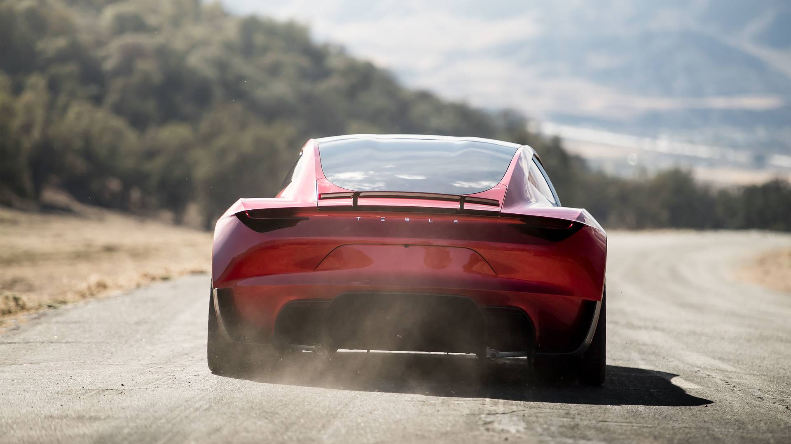
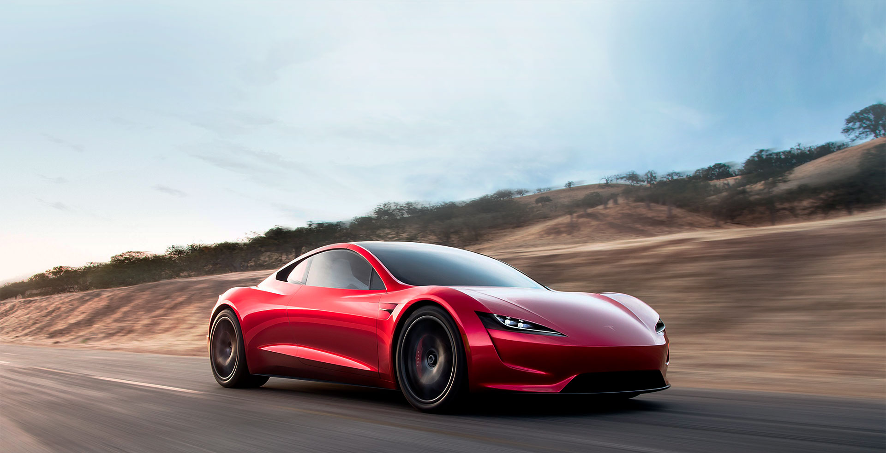
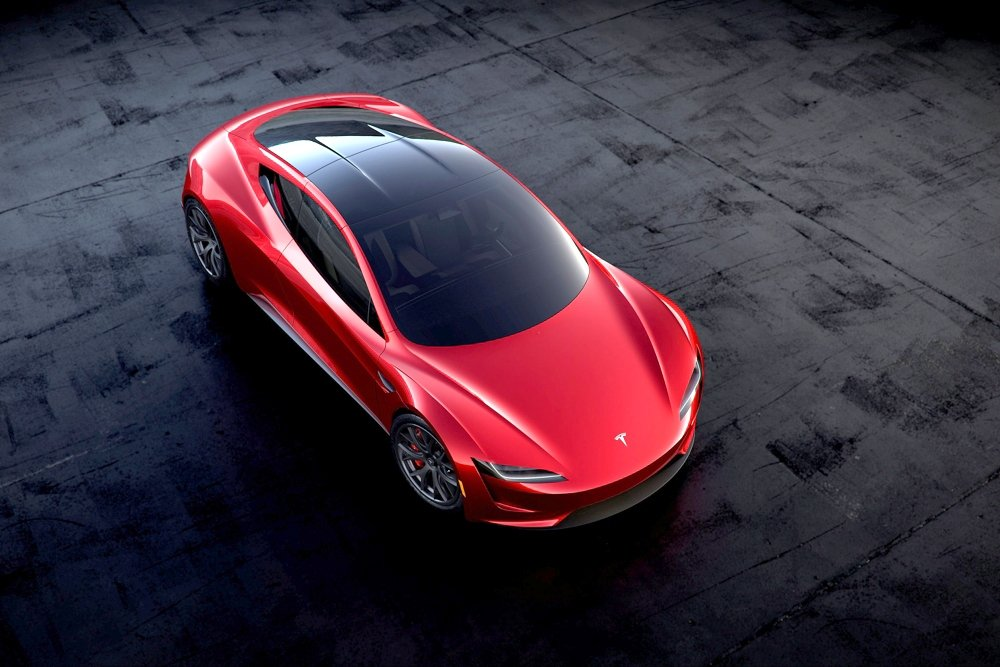

Основная аккумуляторная батарея емкостью 200 кВтч позволяет на одной зарядке преодолевать до 1000 км
Корма обеспечивает правильное распределение воздушного потока на сверхзвуковых скоростях. Максимальный крутящий момент 10000 Нм
Штурвал вместо рулевого колеса, сенсорный дисплей на центральной консоли, спортивные ковши кресел с высокой спинкой-подголовником и стеклянная съемная крыша
